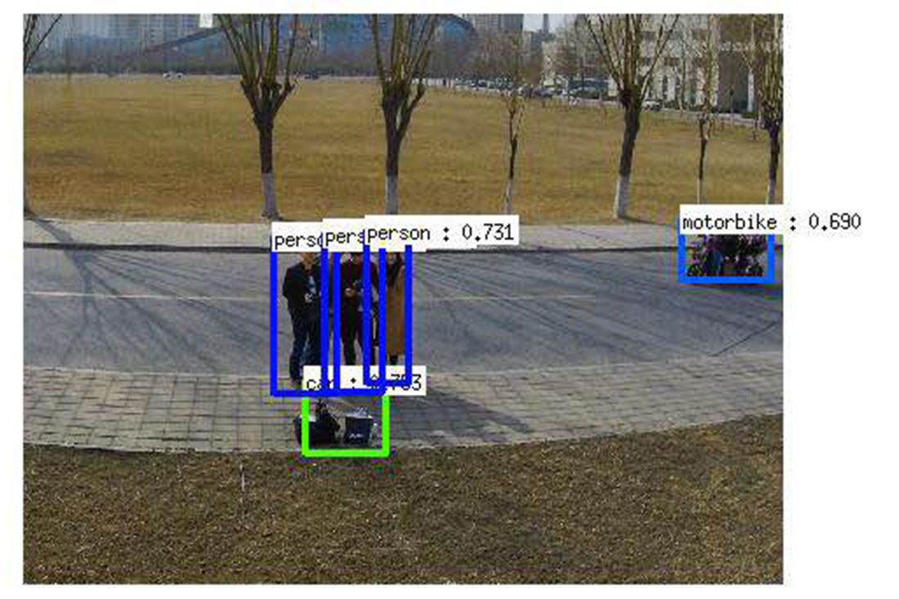

-
Active Track on UAV
- Whether you are running, cycling, skiing and doing other sports, the unmanned aerial vehicle can use our computer vision based object recognition system to track you as you go.
- Caffe View more
-
NAO Robot

- Designed and built a robot interactive program to recognized the target temperature and color with NAO Robot. Techniques such as voice recognition, motion interaction and image processing are involved in it.
- Py View more
-
Deep Learning based Large-scale Image Retrieval

- Proposed a three-stage hybrid image retrieval framework based on convolutional neural networks, which is effective and efficient to deal with image retrieval problem of the same design product. Alibaba large-scale image dataset ALISC-5M is used in this project. It contains five million product images categorized into 10 high-level concepts and 676 sub concepts.
- DL View more
-
Ball Suit

- Programmed four interesting ball games on the same theme but different styles. Designed a new human computer interaction with accelerometer based sphere game controller.
- View more
-
Electronic Keyboard

- Designed and implemented a single-chip based electronic keyboard which can play music and have interactive teaching mode for beginners.
- C View more
-
MEBO

- MEBO Visualized Microenvironment Monitoring System can real-time monitor the environment condition with eight benchmarks around the device. Sensors for environment, data visualization, interactive design and android app are involved in the system.
- View more